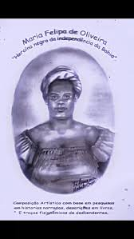
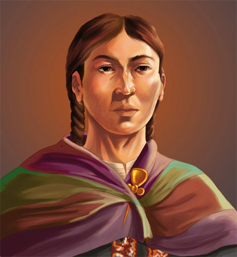

Século XVI
Apacuana viveu no período de intensificação da colonização espanhola na região onde hoje se localiza a Venezuela. Seu povo enfrentava invasões, imposições políticas e violência contra suas comunidades.

“Apacuana enfrentou a violência colonial e tornou-se símbolo da luta dos povos originários.”
Trajetória de uma liderança indígena lembrada como símbolo de resistência contra a colonização espanhola.

Imagem: Apacuana, liderança indígena Quiriquire, lembrada pela resistência contra a colonização espanhola.
Apacuana foi uma liderança indígena associada ao povo Quiriquire, na região dos Valles del Tuy, na atual Venezuela. Reconhecida como cacica, piache e conselheira, sua trajetória ficou marcada pela resistência diante da expansão colonial espanhola no século XVI. Em um contexto de violência, exploração e tentativa de dominação dos povos originários, Apacuana destacou-se por sua atuação política e espiritual junto à sua comunidade.
Sua memória permanece ligada à luta dos povos indígenas pela defesa de seus territórios, de sua autonomia e de suas formas de vida. Ao longo do tempo, Apacuana passou a ser lembrada como símbolo de coragem, liderança feminina indígena e resistência anticolonial. Sua história representa não apenas uma trajetória individual, mas também a força coletiva dos povos originários que enfrentaram a violência colonial e preservaram suas identidades.
Apacuana viveu no período de intensificação da colonização espanhola na região onde hoje se localiza a Venezuela. Seu povo enfrentava invasões, imposições políticas e violência contra suas comunidades.
Como liderança Quiriquire, Apacuana exerceu papel importante na orientação de seu povo, sendo lembrada como cacica, piache e conselheira em momentos de conflito e resistência.
Apacuana ficou associada à resistência contra os colonizadores espanhóis, simbolizando a reação dos povos originários diante da tentativa de domínio colonial sobre seus territórios.
Sua trajetória também revela a brutalidade enfrentada por lideranças indígenas durante o período colonial, especialmente aquelas que se opunham à dominação e defendiam a autonomia de seus povos.
Com o passar do tempo, Apacuana tornou-se uma referência simbólica da resistência indígena venezuelana e da presença das mulheres indígenas nas lutas contra a opressão colonial.
Sua história passou a ser retomada em iniciativas de valorização da memória indígena, destacando seu papel como mulher, liderança espiritual e símbolo de luta dos povos originários.
Atualmente, Apacuana é lembrada como exemplo de coragem, resistência e defesa da dignidade dos povos indígenas da América Latina.

Imagem: representação de Apacuana como símbolo da resistência indígena.
Apacuana é uma mulher extraordinária porque sua trajetória representa a força das lideranças indígenas femininas em um período marcado pela violência colonial. Sua atuação demonstra que as mulheres indígenas não foram apenas vítimas da colonização, mas também protagonistas de processos de resistência, organização e defesa coletiva.
Sua importância está ligada à coragem de enfrentar um sistema que buscava destruir territórios, culturas e formas de vida dos povos originários. Como liderança espiritual e política, Apacuana simboliza sabedoria, estratégia e compromisso com sua comunidade.
Lembrar Apacuana é reconhecer que a história da América Latina também foi construída por mulheres indígenas que resistiram, lideraram e defenderam seus povos diante da opressão colonial. Seu legado permanece como inspiração para as lutas atuais por memória, justiça e valorização dos povos originários.
Influência na memória indígena, na resistência anticolonial e no reconhecimento das mulheres originárias.
O legado de Apacuana está na força simbólica de sua resistência. Sua história ajuda a evidenciar que os povos indígenas lutaram contra a colonização desde os primeiros momentos da invasão europeia, defendendo seus territórios, suas culturas e sua autonomia.
Além disso, Apacuana representa o protagonismo das mulheres indígenas na história. Sua memória rompe com narrativas que invisibilizam lideranças femininas e mostra que a resistência dos povos originários também foi conduzida por mulheres estrategistas, conselheiras, guerreiras e líderes espirituais.
Hoje, sua trajetória permanece como referência para debates sobre justiça histórica, valorização da memória indígena e luta contra as marcas deixadas pela colonização. Apacuana tornou-se símbolo de dignidade, coragem e resistência coletiva.
Sites, artigos e materiais utilizados como apoio.
Principal narrativa histórica sobre o levante de 1577, a atuação atribuída a Apacuana, a repressão colonial e seu enforcamento. A obra foi publicada muito depois dos fatos e deve ser lida criticamente por sua perspectiva colonial. Link: https://www.biblioteca-antologica.org/es/wp-content/uploads/2019/08/OVIEDO-Y-BA%C3%91OS-Historia-de-la-Conquista-de-Venezuela.pdf
Artigo acadêmico sobre as populações caribófonas da região centro-norte da Venezuela, a encomienda, o trabalho coercitivo e as mudanças socioculturais impostas pela colonização. Link: https://ve.scielo.org/scielo.php?pid=S1315-94962016000200010&script=sci_arttext
Livro acadêmico que analisa etnográfica e historiograficamente a obra de Oviedo y Baños e as populações indígenas da região. Link: https://books.google.co.ve/books?hl=es&id=drxTA48BO8kC&lr=&num=20
O anexo biográfico apresenta Apacuana como cacica, piache, conselheira e liderança Quiriquire e reconta o levante, a repressão colonial e sua execução. Link: https://venezuela.unfpa.org/sites/default/files/pub-pdf/2024-12/EsMujeres-%20Espacios%20Seguros%20para%20Mujeres%20y%20Adolescentes.pdf
Livro que discute a invisibilização de mulheres e povos indígenas na historiografia venezuelana e apresenta Apacuana como liderança da resistência de 1577. Link: https://fundarte.gob.ve/web/wp-content/uploads/2023/02/LaFormacionDelSujetoPuebloEnLaHistoriaDeVenezuela_IraidaVargasArenas_2021-versionDIGITAL.pdf
Documento oficial que registra a incorporação dos restos simbólicos de Apacuana ao Panteão Nacional em 8 de março de 2017. Link: https://digitallibrary.un.org/record/3951586/files/CEDAW_C_VEN_9-ES.pdf
Edição oficial que inclui o poema dramático “Apacuana y Cuaricurián”, usado como fonte sobre a representação artística da personagem, não como documento direto do século XVI. Link: https://fundarte.gob.ve/web/wp-content/uploads/2016/03/FERIA_DEL_LIBRO_CCS-2021_LA_RESISTENCIA_INDIGENA-CESAR_RENGIFO.pdf
Registro institucional da inauguração do monumento dedicado a Apacuana na autopista Valle-Coche, em Caracas. Link: https://fundarte.gob.ve/web/2018/12/12/la-alcaldia-de-caracas-reivindica-el-papel-de-las-mujeres-en-la-memoria-historica-de-venezuela/
Fonte institucional sobre a continuidade da homenagem a Apacuana por meio de uma bienal nacional de literatura dedicada à dramaturgia. Link: https://www.mincultura.gob.ve/noticias/iii-bienales-de-literatura-apacuana-y-cesar-rengifo-2026-se-centraran-en-las-artes-escenicas/
Conheça outras trajetórias marcantes da luta por justiça e transformação social.

Crédito da imagem
Bartolina Sisa, líder indígena cuja resistência ajudou a marcar a luta dos povos originários contra a opressão colonial.
Saiba mais
Imagem: representação de Bartolina Sisa em cédula boliviana — via Banco Central da Bolívia .
Estrategista quilombola cuja resistência ajudou a marcar a luta negra por liberdade no Brasil lorem.
Saiba mais
Crédito da imagem
Intelectual fundamental para os debates sobre feminismo negro, cultura e desigualdade racial no Brasil.
Saiba mais
Crédito da imagem
Liderança indígena e jurista que ampliou a presença dos povos originários nos espaços de decisão.
Saiba mais